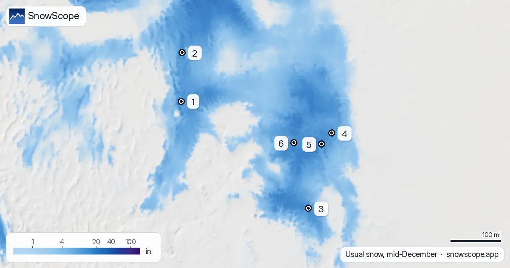

Utah vs Colorado on a December budget: snow odds and checked prices
Early December favours Utah; by Christmas the gap closes. Brighton Resort in Utah has 37 in (94 cm) of typical snow at mid-mountain on 15 December, with strong odds of 20 in or more. Wolf Creek in Colorado starts thinner at 34 in (87 cm) but sits higher and builds faster through the month. Ticket prices and snow reliability differ sharply between the two.
See the live snow forecast for Utah and Colorado in the SnowScope appSnow depth, powder alerts and the 3D map, free.
The early-December edge: Brighton wins
On 1 December, Brighton's mid-mountain sits at a typical 28 in (70 cm), while Wolf Creek at the same date has 24 in (60 cm). That 4 in lead reflects Utah's earlier snow season and lower starting elevation. By 15 December the gap narrows but stays meaningful: Brighton holds 37 in (94 cm) versus Wolf Creek's 34 in (87 cm).
The reliability matters if you book early. On 15 December, Brighton reaches 20 in or more in 89 % of winters; Wolf Creek manages 72 %. If the winter is lean (one in ten), Brighton still leaves 20 in (52 cm), but Wolf Creek drops to just 5 in (12 cm). For a solid early-December trip, Brighton carries less risk.

Christmas week closes the gap
By 25 December both resorts catch up. Brighton's mid-mountain typical depth is 48 in (122 cm) with 98 % of winters above 20 in. Wolf Creek reaches 42 in (107 cm) with 78 % of winters above 20 in. The altitude difference shows: Wolf Creek's higher elevation (11,010 ft vs 9,600 ft) stores more snow through December.
By New Year's Eve the positions flip slightly. Brighton settles at 52 in (133 cm) and Wolf Creek at 46 in (118 cm). Both are reliable. For a holiday week trip, either resort works, but Wolf Creek offers a mountain feel with thinner early December snow to avoid.
Trends across the past 15 winters
Brighton has held its December snow depth fairly steadily. Its 15 December median shifted from 50 in (128 cm) in the first 15 winters to 27 in (68 cm) in the last 15 winters—a real decline, but still above average. The share of winters with 20 in or more dropped from 100 % to 73 %.
Wolf Creek's trend is more dramatic. Its 15 December median fell from 55 in (140 cm) to 24 in (60 cm), and the share above 20 in dropped from 87 % to 67 %. Last winter was especially lean: only 9 in (23 cm) on the 15th. This matters if you plan around 'typical' snow; Brighton's reputation has held up better than Wolf Creek's early-December odds.
Ticket prices and peak days
Brighton starts at $72 if you buy early (dynamic pricing rewards advance booking). It charges no peak surcharge; one price covers the whole month. Wolf Creek holds prices steady at $96 on regular days and $110 on peak days. In December, peak runs 20–23 and 26–31, so you save $14 per day before the 20th and on Christmas Eve or Christmas Day.
For a 2-day trip in early December, Wolf Creek costs $192; Brighton's dynamic pricing starts lower but depends on when you buy. For Christmas week, Wolf Creek's peak pricing ($220 for 2 days) versus Brighton's flat rate ($144 for 2 days) favours Brighton. Multi-day passes at Wolf Creek offer better per-ticket value if you ski the peak dates anyway.
Which week has the best odds?
At Brighton, the week of 14–20 December has good snow (at least 20 in at mid-mountain) in 96 % of winters, rising to 98 % in Christmas week. Early December (30 Nov–6 Dec) drops to 80 % odds, still solid but not guaranteed.
At Wolf Creek, early December is thinner: only 59 % of winters see good snow in the first week of December. By 14–20 December it rises to 76 %, and by Christmas week to 78 %. If you must choose early December, Brighton is the safer bet. If you can book mid-to-late December, both are reliable.
Tips for skiers
- Planning a trip before 15 December? Brighton carries higher snow odds and no peak pricing. Buy tickets online as early as possible to lock in the best rate.
- If you must book early December at Wolf Creek, check the SnowScope snow map first. One in ten winters sees only 5 in on the 15th; a dry spell upwind could affect the San Juan passes.
- For Christmas week (after 20 December), both resorts typically have 40+ in at mid-mountain. Wolf Creek's peak pricing ($110/day) makes Brighton's flat rate more attractive unless you prefer higher altitude and emptier slopes.
- Before driving to either resort, carry chains or fit winter tyres; both lie in mountain terrain with traction rules, especially on the approach roads.
- For off-piste skiing, check the official avalanche bulletin: Utah Avalanche Center for Brighton, Colorado Avalanche Information Center for Wolf Creek.
About these numbers
Resort snow depths are the deepest snow on the resort's upper slopes on the date shown; they are estimates for an area, not a measurement at one point. Forecasts can change. Always read the official avalanche bulletin before going off-piste.
Cite this report
For research, teaching or the press: the numbers and charts are free to reuse under CC BY 4.0 with this citation.
SnowScope (2026), Utah vs Colorado on a December budget: snow odds and checked prices, https://snowscope.app/blog/en/2026/11/utah-vs-colorado-december-ski-budget-2026.html, accessed 2026-11-14
SnowScope (Atlas Labs). (2026, November 14). Utah vs Colorado on a December budget: snow odds and checked prices. SnowScope snow reports. https://snowscope.app/blog/en/2026/11/utah-vs-colorado-december-ski-budget-2026.html
BibTeX
@misc{snowscope2026utahvscoloradodecembersk,
author = {{SnowScope (Atlas Labs)}},
title = {Utah vs Colorado on a December budget: snow odds and checked prices},
year = {2026},
month = nov,
howpublished = {\url{https://snowscope.app/blog/en/2026/11/utah-vs-colorado-december-ski-budget-2026.html}},
note = {Published 2026-11-14 20:11 UTC; accessed 2026-11-14}
}· CC BY 4.0 · Methods, data and tools →
Follow Utah and Colorado
Free: a message when fresh snow is coming, and the forecast every morning.
More snow reports

Loveland sells $60 online tickets through December 13, then $159 from December 14. Early December snow averages 20 in (50 cm) at mid-mountain, but the base is half as deep as mid-winter.

High Colorado ski area holds weekday lift ticket at $49 for 2026-27; mid-mountain snow reaches 26 in (66 cm) by mid-December in a typical winter. Data from 13 November 2026.

Wolf Creek measured 20 in (51 cm) on November 11, 2026, tracking 115% of normal while vastly outpacing last year's thin early start.